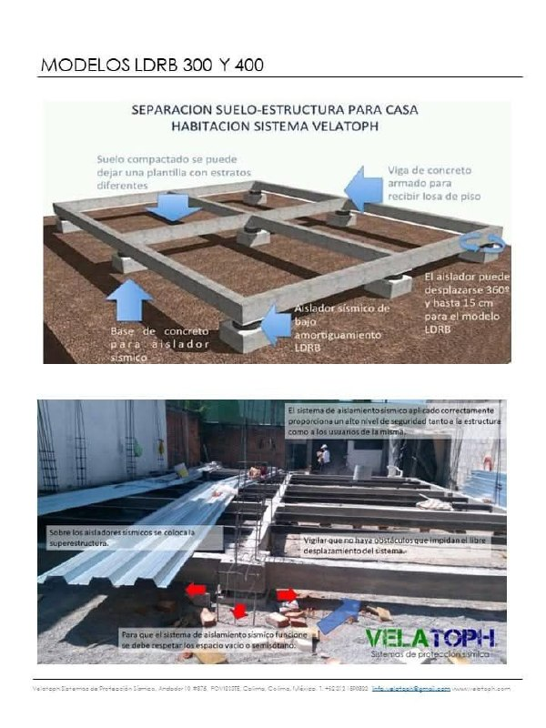
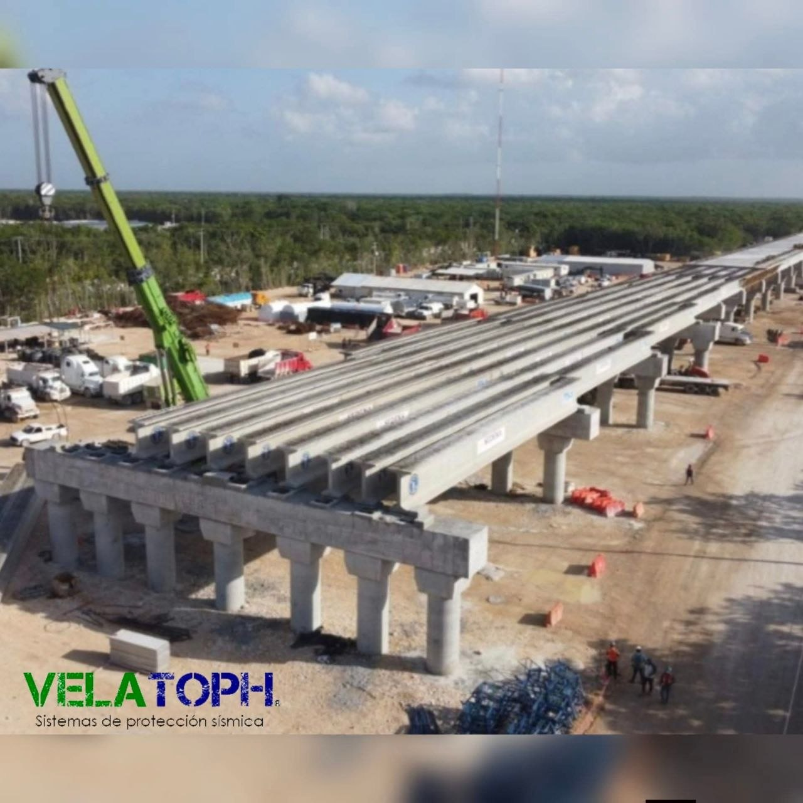
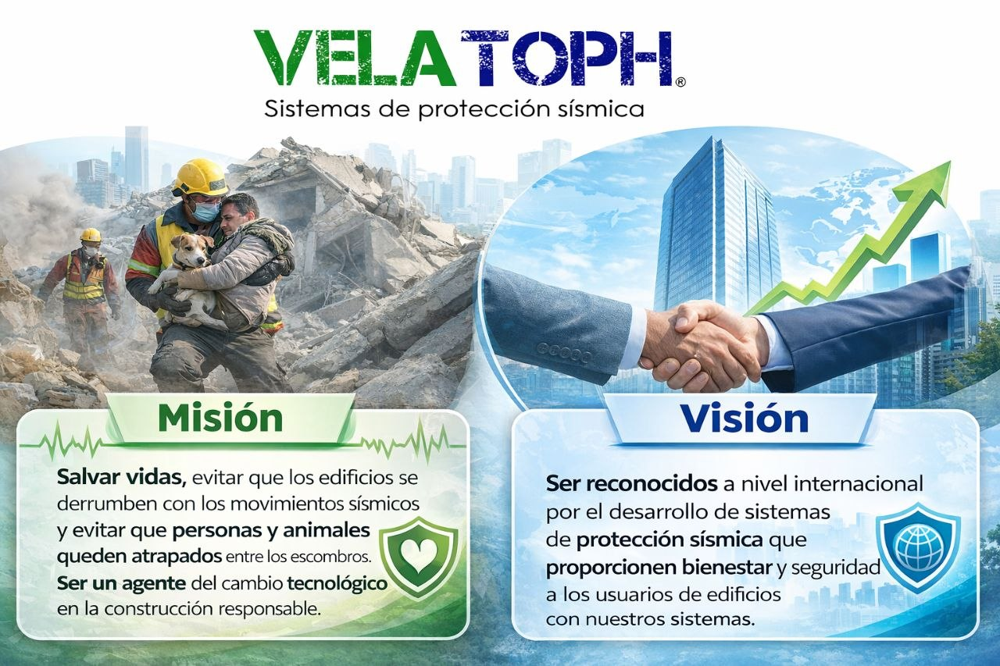
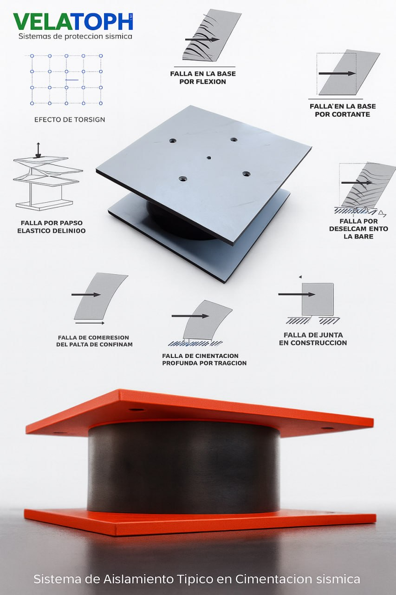

Velatoph es una empresa mexicana enfocada en innovación y desarrollo tecnológico en ingeniería sísmica, software de análisis y diseño sísmico, consultoría estructural, métodos constructivos y sistemas de protección sísmica.
Trabajamos para transformar un tema altamente técnico en soluciones claras, viables y bien fundamentadas para proyectos que necesitan mayor seguridad sísmica.
Nuestro enfoque combina análisis estructural, desarrollo tecnológico, criterios constructivos y una visión aplicada al desempeño real de las estructuras ante eventos severos.
No buscamos comunicar complejidad por sí misma. Buscamos convertirla en decisiones comprensibles y técnicamente sólidas.

Integramos conocimiento técnico, validación y desarrollo de sistemas para responder a necesidades reales de protección sísmica en distintos tipos de proyecto.

Ayudar a proteger vidas, estructuras, contenidos y operación mediante soluciones diseñadas para responder mejor ante sismos severos.

Contribuir a una construcción más segura, resiliente y técnicamente preparada frente al riesgo sísmico.
Más que vender tecnología, buscamos que cada solución tenga sentido técnico, constructivo y operativo para el tipo de proyecto que se está evaluando.

Podemos ayudarte a evaluar una necesidad específica o a revisar cómo una estrategia de protección sísmica podría integrarse a tu proyecto.
Solicitar evaluación técnicaHablar por WhatsApp